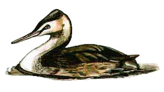

Great Crested Grebe
A common sight at Chard reservoir around the year. This reservoir is known as a stronghold for Somerset breeding Great Crested Grebe, but numbers of breeding pairs vary year to year from 0 to 9. They first colonized the reservoir around 1910. Most of the early records were submitted by Col. J.W. Gifford.

1920 - 2 pairs
1923 - 5 pairs
No records or information received during 1924 & 1925
1926 - 'Many' pairs bred
1927 - Maximum count of 14 birds, some juveniles hatched this year
1928 - At least 5 pairs bred
23/05/28 - Maximum count of 22 birds
1930 - 6 pairs bred
1931 - No breeding due to reservoir being drained
20/03/32 - Pair present but gone by 03/05
1933 - Pair bred
1935 - Pair seen but no proof of breeding
26/04/38 - 4 pairs, but no birds after 05/05
1939 - 2 pairs bred
1940 - 5 pairs reported
21/04/41 - Maximum count of 18 birds. 2 or 3 pairs bred during 1941
1942 - 4 pairs bred
1943 - At least 2 pairs bred
No records between 1944 & 1956
Reservoir drained in 1947
19/04/57 - Nest with 2 eggs. 1st breeding record for at least 7 years, although sadly unsuccessful
1959 - Pair raised young. 1st successful breeding for 8 years
16/06/60 - 3 pairs bred. At least 4 young seen
1962 - 2 pairs bred successfully, up to 6 present at various dates
27/10/63 - Maximum count of 10 birds. 3 pairs bred this year
08/10/64 - Maximum count of 21 birds. At least 5 pairs bred this year & up to 10 young reared
24/08/65 - Maximum count of 30 birds. 5 or 6 pairs bred & up to 15 young seen
31/03/66 - Maximum count of 22 birds
27/07/66 - Bred with some 16 juveniles seen
1967 - At least 13 or 14 pairs with a record (since beaten) 21 juveniles seen
17/03/68 - 21 pairs seen by this date, with 7 nests but oil pollution resulted in a lower count of offspring than previous year
09/02/69 - Maximum count of 39 birds. Grebe numbers present throughout the year but no breeding due to pollution
19/03/70 - 11 breeding pairs by this date. Up to 14 juveniles seen
10/09/70 - Maximum count of 45 birds
14/03/71 - Maximum count of 27 birds. 6 juveniles seen this year
13/04/72 - Maximum count of 14 birds. Only 1 juvenile seen this year
18/02/73 - Maximum count of 32 birds. No breeding this year
1974 - Up to 15 birds by March & April but no breeding took place
??/01/75 - Maximum count of 8 birds. Did not breed this year
1976 - No information in local reports for this year but the severe drought spelt bad news for the Grebe
1977 - Single pair bred
23/08/78 - Maximum count of 36 birds. 5 pairs bresd successfully this year
16/09/79 - Maximum count of a staggering 63 birds. At least 6 pairs bred this year, with 17 young raised
19/10/80 - Maximum count of 26 birds. No breeding this year
1981 - 5 pairs in May & June but no breeding took place
1982 - 6 pairs remained throughout the summer months but no breeding took place
18/09/83 - Maximum count of 26 birds. Successful breeding this year with 7 young raised
1984 - Very successful breeding with 28 young raised
22/03/85 - Maximum count of 18 birds. No breeding this year (?)
05/08/86 - Maximum count of 34 birds. 9 young were raised this year
1987 - Pair in April
22/08/88 - Maximum count of 18 birds. No breeding this year (?)
03/09/89 - Maximum count of 20 birds. Breeding this year resulted in 2 young
15/02/92 - Pair on nest, but later flooded. 4 young were raised by 2 pairs this year
06/03/92 - maximum count of 23 birds
18/02/93 - Maximum count of 28 birds. A breeding pair raised a single young
28/12/94 - Maximum count of 17 birds. 3 pairs bred, raising 7 young
21/03/95 - Maximum count of 30 birds. 4 pairs bred, raising 10 young
15/11/96 - Maximum count of 46 birds. 4 pairs bred, raising at least 9 young
24/12/97 - Maximum count of 49 birds. 11 pairs bred but raised a disappointing 11 young
04/01/98 - Maximum count of 54 birds. 1 pair raised 1 young. Several nests were flooded in June
16/11/98 - 43 birds
09/12/98 - 49 birds
16/01/99 - 36 birds. No breeding recorded
27/10/99 - 36 birds
27/11/99 - 41 birds
05/12/99 - Maximum count of 48 birds
16/08/00 - 3 pairs with 7 chicks
02/12/00 - max count 48
16/07/01 - 8 young, probably 4 successful pairs
14/12/01 - Max count of 49 birds on 3 dates in December
18/02/02 - Max count 30 this year
09/06/02 - 5 pairs but no young seen this year
2003 - Probably 13 young hatched altogether but many disappeared at a young age
29/11/03 - max count of 52 birds and again on 06/12
01/01/04 - max count of 51 with high of 48 nearly a year later on 17/12/04
24/07/04 - 7 juveniles
08/01/05 - 55 birds rising to 60 on 30/01. Despite these big winter numbers and nearly 20 birds during the summer, no reports of nesting this year.
28/12/05 - 57 birds
07/01/06 - 50 birds reducing to about 20 over the summer
23/11/06 - 45 birds
16/07/07 - Chicks from the 9th pair this summer took to the water today
26/07/07 - 16 juveniles present
17/09/07 - 45 birds
2008 - maximum of 10 young seen, 8 believed to have survived from 5 breeding pairs
10/12/08 - 61 birds
23/07/09 - 7 chicks
14/11/09 - 55 birds
2010 - 46 birds on 23/11 and again on 27/11, max 4 young raised
2011 - 50 birds on 17/11, max 9 young at any one time in late August, probably 5 pairs bred
2012 - 58 on 18/11 55 on 06/11 and 52 on 12/11. Low numbers, max 15 in December with single figures in 2nd half of month when water levels were very high. Breeding attempted, but nests washed out at end of April.
2013 - very low numbers (2 or 3) in January, influx on 18/02 when 18, rising to 28 on 03/03 in very cold weather. 3 pairs over summer, one pair nested in July at south end, but were unsuccessful. 2 chicks seen 11/08 at north end and over the next 2 months. Max count 44 on 20/11
2014 - Winter maximums of 50
on 24/11 and 06/12. A very good breeding year with 28
chicks believed to have hatched. 21 young were counted on 20/07
with 26 believed hatched altogether at that point while 2 nests were still occupied.
The first chick was seen on 06/05 and the last hatched in the first week of
August
2015 - Winter maximum of 63
on 09/02 in very cold weather equalling the record number of 1979. 3
pairs believed to have bred with probably 7 young raised
2016 - Winter maximum of 72 on 13/11, also 66 on 22/11 and 64 on 19/11, all breaking previous records. 4 young hatched in one brood, 3 known nesting attempts
2017 - Winter maximum of 52 in both winter periods on 14/01 and 09/12. Max of 6 young seen together over the summer from several nests.
2018 - Winter maximum of 51 on 21/11. There were 10 known nests producing 18 hatched young, though at least 3 of these were lost at a very young age. Broods were a maximum size of 2
2019 - Winter maximum of 46 on 13/01 and 18/01. Maximum of 6 young seen at one time, but 7 believed to have hatched
2020 - Winter maximum of 53 on 14/11. Up to 7 young from 4 nests seen during July
2021 - Winter maximums of 37 on 20/01 and 34 on 09/12 and 20/12 for the second winter period. There was an exceptional flash flood in Chard on 29th June which would have destroyed any nests this year
2022 - Winter maximums of 26 on several dates through January and February and 36 on 06/12 for the second winter period. 2 nests known to be successful, raising 5 chicks between them. First young seen on 06/05
2023 - Winter maximum of 27 on 05/12. Mating was seen on 25/06 and the first chick on 08/07. 6 chicks were raised from 3 broods
2024 - Winter maximum of 34 on 29/12 and 22 in first winter period on 09/02. Just one chick raised this year, first seen on 02/08
2025 - Winter maximum of 41 on 22/11 and also 40+ on 04/12. Also 39 on 27/11 and 39 in the first winter period on 03/01. First chick seen on 27/06, which also corresponded with the lowest total numbers of grebes with just 4 adults seen the previous week on 20/06, then 3 young seen in July, believed to be from 3 separate nests